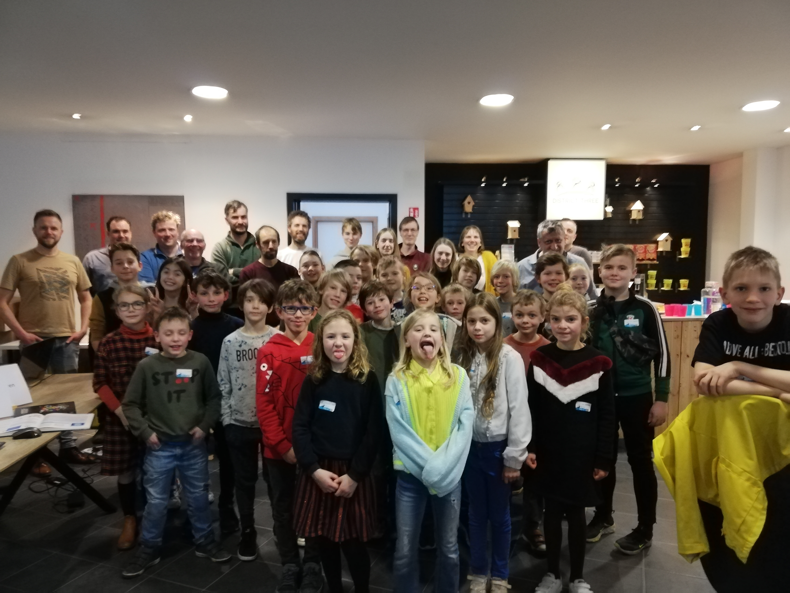

save coderdojo lier
wat is coderdojo
coderdojo is waar kinderen leren programeren ze kunnen spelletjes maken wat ze achter af kunnen uittesten en aan hun vrienden kunnen laten zien
coderdojo is helemaal gratis (maar steun is altijd welkom in onze lichtgevende spaarpot)
een gemiddelde sesie
|
voormiddag |
nammidag |
| hoe laat moet je er zijn |
10:00 |
14:00 |
| pauze |
11:15 tot 11:30 |
15:15 tot 15:30 |
| show en tell tot einde |
12:30 tot 13:00 |
16:30 tot 17:00 |

de coaches zijn:
- joke
- kurt
- cathy
- toon
- eric
- vaya
- johan
- erik
- wim
- clemont
- ivan
- filip
- peter
- luc
voor de ouders en andere volwassenen:kom jij ook mee coachen?
je kan ook:voor het eten zorgen
je kan ook voor drinken zorgen
en je kan met de usb-stick rond gaan voor de show en tell
je moet niet kunnen programeren!
als je project nog niet klaar is kan je het thuis afwerken